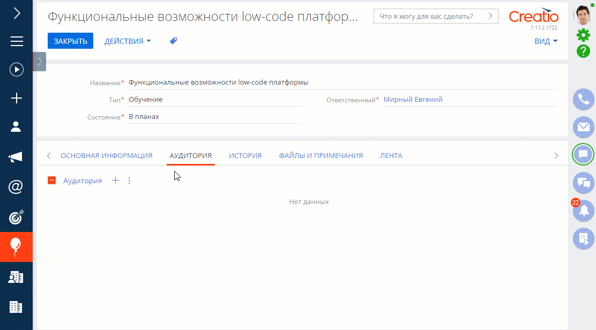

Дата релиза
Представляем обзор изменений и улучшений, реализованных в Creatio версии 7.17.2.
Инструкция по обновлению для приложений on-site доступна в отдельной статье.
Marketing Creatio
- Появилась возможность импортировать аудиторию мероприятия из группы или по пользовательскому фильтру.
Импорт аудитории мероприятия
Кампании
- Обновлена логика добавления участников в кампанию.
- Добавление участников с посадочных страниц и из мероприятий выполняется по сигналу, а не в начале нового периода выполнения кампании.
- Элементы [Добавить с посадочной страницы] и [Добавить из мероприятия] можно использовать только в качестве начального события.
- Во всех элементах, которые добавляют аудиторию по сигналу, учтена возможность повторного входа участников в кампанию.
- Реализован новый элемент для наполнения аудитории мероприятия из кампании.
Пример использования обновленных элементов кампании
- Появилась возможность просматривать общее количество участников, побывавших на каждом из шагов кампании за весь период ее активности. Для этого на схеме кампании реализован новый счетчик "История".
Рассылки
- Появилась возможность использовать в utm-метке символ "-".
- Исправлена ситуация, когда рассылка, запланированная к отправке через несколько минут, становилась доступна для отправки вручную.
Sales Creatio
- Появилась возможность просмотреть данные, на основании которых были получены значения расчетных колонок плана (drill down). При клике на запись в планировании отобразится окно с перечнем исходных данных. В нем вы можете настроить колонки для отображения и экспортировать данные в Excel.
Просмотр исходных данных расчетного значения плана

- Добавлена возможность перейти из перечня данных, на основании которых были получены значения расчетных колонок плана (drill down), непосредственно к записям раздела, по которым было рассчитано значение. В версии 7.17.2 эта функциональность доступна в режиме бета-тестирования. Чтобы оценить возможности планирования, запросите в службе технической поддержки включение функциональности в вашем приложении. Будем благодарны за обратную связь. В открытом доступе функциональность появится уже в ближайших релизах.
Service Creatio
- Реализован поиск похожих обращений средствами ИИ, чтобы повысить эффективность работы службы поддержки. Если в Creatio хранится более 100 обработанных обращений, то преднастроенная рекомендательная модель автоматически обучится и будет выполнять прогноз для всех новых обращений. Результаты поиска отобразятся на детали [Похожие обращения]. Если описание или тема обращения были изменены, то можно запустить для него повторный поиск.
Повторный запуск поиска похожих обращений
Базовый интерфейс и возможности системы
Чаты
- Реализована быстрая вставка картинки в чат из буфера обмена при помощи сочетания клавиш Ctrl + V.
- Появилась возможность использовать в чатах шаблоны для быстрых ответов.
- Для выбора шаблона в окне чата добавлена кнопка . Перед отправкой сообщения текст можно отредактировать.
- Шаблоны можно персонализировать при помощи макросов, добавив данные клиента или оператора.
- Для быстрого поиска необходимого шаблона оператор может воспользоваться командой "//". Поиск шаблона осуществляется по названию и тексту шаблона.
- Добавить новые или отредактировать существующие шаблоны можно в разделе [Шаблоны сообщений].
- Реализованы мультиязычные шаблоны для чатов — в каналах можно указать язык общения, на котором оператору при обработке сообщений из данного канала будут предлагаться шаблоны быстрых ответов. Если на странице контакта указан предпочитаемый язык общения, то шаблоны в чате отобразятся на языке контакта. Если ни у контакта, ни у канала не указан язык общения, то шаблон будет на языке, указанном в системной настройке "Язык сообщений по умолчанию".
- Появилась возможность просмотреть и изменить статус оператора на коммуникационной панели.
Изменение статуса оператора на коммуникационной панели
Мобильное приложение
- В гибридном режиме появилась возможность работать с визами. Перечень виз и их обработка доступны независимо от наличия соединения с основным приложением. Все изменения будут переданы в основное приложение сразу после восстановления соединения.
Интеграции
- Реализована low-code интеграция с SOAP-сервисами. Для настройки интеграции необходимо загрузить в Creatio файл WDSL, полученный на стороне интегрируемого сервиса. Работа с SOAP-сервисами в Creatio аналогична работе с REST-сервисами.
- В .Net Core приложениях Creatio, развернутых на Linux, поддержана возможность синхронизации с каталогом LDAP.
- В Net Framework приложениях Creatio, развернутых на Windows, реализована синхронизация с каталогом LDAP по защищенному протоколу SSL.
Бизнес-процессы
- Реализована возможность пользовательскими инструментами настроить генерацию отчетов Word и Fast Report в элементе бизнес-процесса [Обработать файл]. Сгенерированные отчеты можно добавить в любую запись на деталь [Файлы и ссылки] или использовать далее в процессе, например, отправить вложением по email.
- При использовании значений справочников в качестве параметра элемента или процесса к макросу записи добавляется ее Id в Creatio. Это поможет избежать неоднозначности в случаях, когда в справочниках есть несколько записей с одинаковым названием.
Инструменты пользовательской настройки
Отчеты
- Появилась возможность копирования настроенных в Creatio отчетов Word. Это позволит сократить время настройки похожих отчетов — при копировании в новый отчет сохраняются все настроенные для исходного колонки, макросы, табличные части, фильтры и сам шаблон. Также добавлена возможность при настройке отчета копировать его табличную часть, сократив таким образом время настройки похожих таблиц. Подробнее: Создать отчет Word в Creatio.
Бизнес-правила
- В бизнес-правиле "Заполнять значение поля" для расчета значений по формуле реализована функция "ТекущаяДатаВремя", которая позволяет определить будущую дату в зависимости от текущей, например, плановое время завершения задачи, дату следующей верификации продажи и т. п.
Мастер разделов
- В дизайнере страницы появилась возможность добавлять подсказки к полям.
- При создании подсказки можно ввести ее значения на всех языках системы.
- В подсказках доступно html-форматирование. Для его использования необходимо вводить текст подсказки вместе с html-разметкой.
- Исправлена ситуация, когда для страниц, созданных или измененных средствами разработки, не применялись изменения формата даты, точности дробных чисел, длины строки и т. п., внесенные через мастер разделов.
- Появилась возможность создать деталь на основании нового объекта Creatio непосредственно из мастера деталей.
- При создании и изменении деталей в мастере для них можно настраивать редактируемый реестр пользовательскими средствами.
Администрирование
- Добавлено уведомление о необходимости продления лицензий. Системные администраторы увидят его в коммуникационной панели в случаях, когда в приложении нет лицензий на новый период или их недостаточно. По умолчанию такое уведомление приходит за день до завершения текущих лицензий. Вы можете настроить любой срок, за который необходимо напомнить о необходимости продления лицензий, в системной настройке с кодом "ExpireLicenseNotificationTerm".
Инструменты разработки
- Добавлено API для работы с файлами, которое облегчает подключение к Creatio пользовательских интеграций со сторонними хранилищами файлов, такими как файловая система, различные облачные хранилища и т. д. Это позволит уменьшить размер базы данных вашего приложения без ограничений на работу с файлами. Подробнее читайте в статье Работа с файлами.
- В DataService добавлен запрет использования запросов на удаление записей, у которых нет фильтров. Это позволяет защитить систему от случайного удаления всех данных в таблице.
Управление конфигурацией
- Появилась возможность управлять блокировкой пакетов и элементов в SVN из раздела [Управление конфигурацией]. Для этого в разделе реализованы соответствующие действия.
- Добавлена возможность редактировать некорректные метаданные в разделе [Управление конфигурацией].
- Реализован множественный выбор в реестре элементов конфигурации. Массово можно выполнить следующие действия:
- удаление;
- экспорт;
- генерация исходных кодов;
- перенос элементов;
- обновление структуры БД;
- установка данных;
- установка SQL-сценариев.
- Появилась возможность просмотреть исходный код бизнес-процессов, элементов процесса "Действия пользователя" и объектов. Для просмотра исходного кода необходимо в разделе [Управление конфигурацией] выбрать соответствующий пункт в меню действий элемента.
Просмотр исходного кода
- Добавлена возможность управлять параметрами клиентских модулей в разделе [Управление конфигурацией].
- Появилась возможность проверить наличие конфликтов по зависимостям, которые могли появиться после переноса элементов между пакетами. Для этого в разделе [Управление конфигурацией] добавлено новое действие "Проверить зависимости между элементами".
- В дизайнере привязок данных реализован поиск по ID элемента, а также по всем полям с типом GUID.
- Появилась возможность переносить элементы конфигурации между пакетами. Перенос доступен как для выбранных элементов, так и для всего содержимого пакета.
- Реализована проверка уникальности названия схемы в рамках одного пакета при разработке в файловой системе.